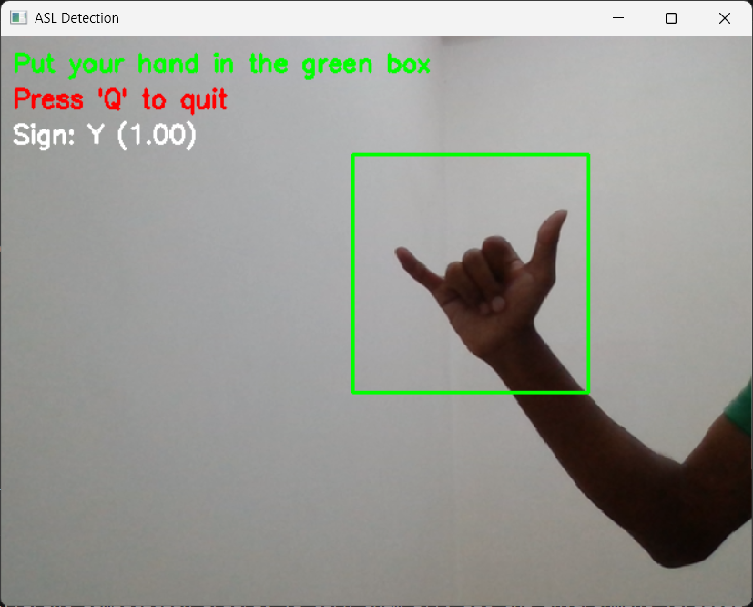
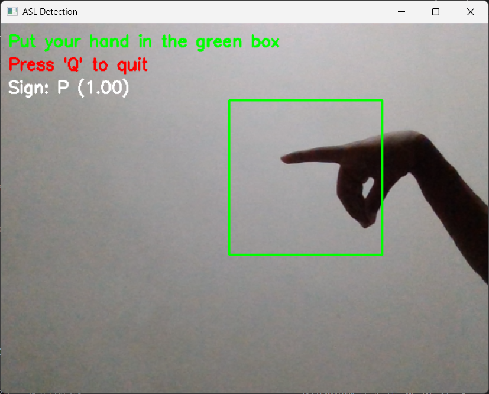
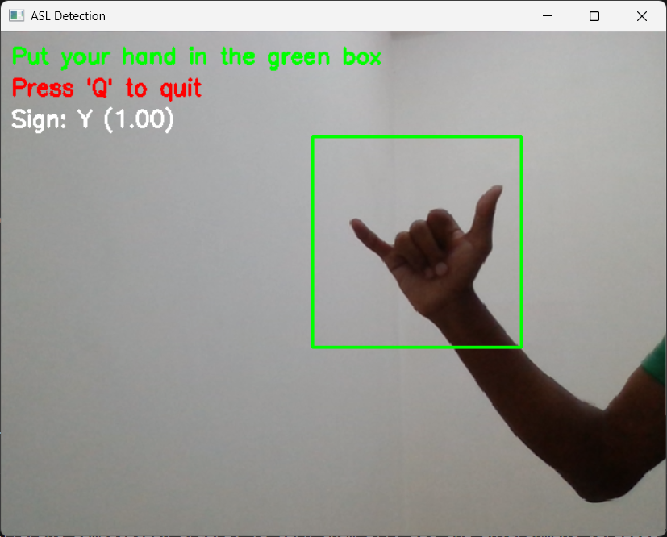
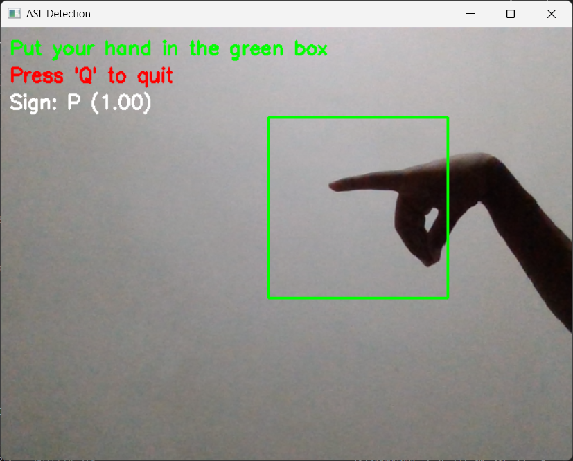
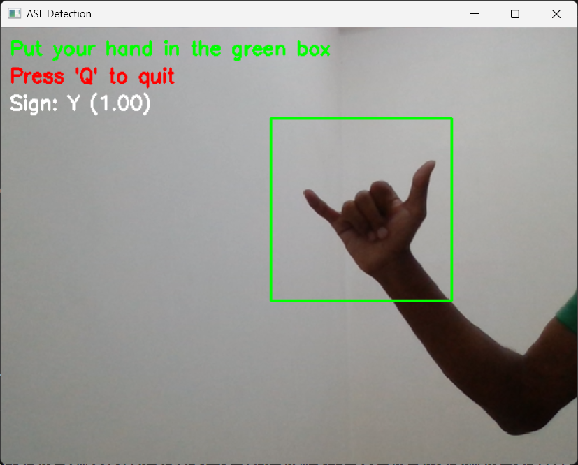
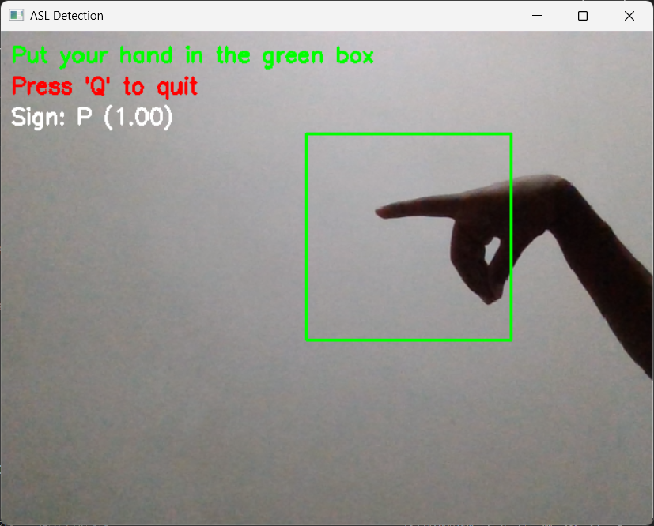

Sample Results
 



Real-time American Sign Language recognition for 29 classes (A-Z + space/del/nothing).
Real-time detection by Prabal Jay | Unified Mentor


git clone https://github.com/PrabalJay/asl-detection-29-classes.git
cd asl-detection-29-classes
pip install -r requirements.txt
python detect.py